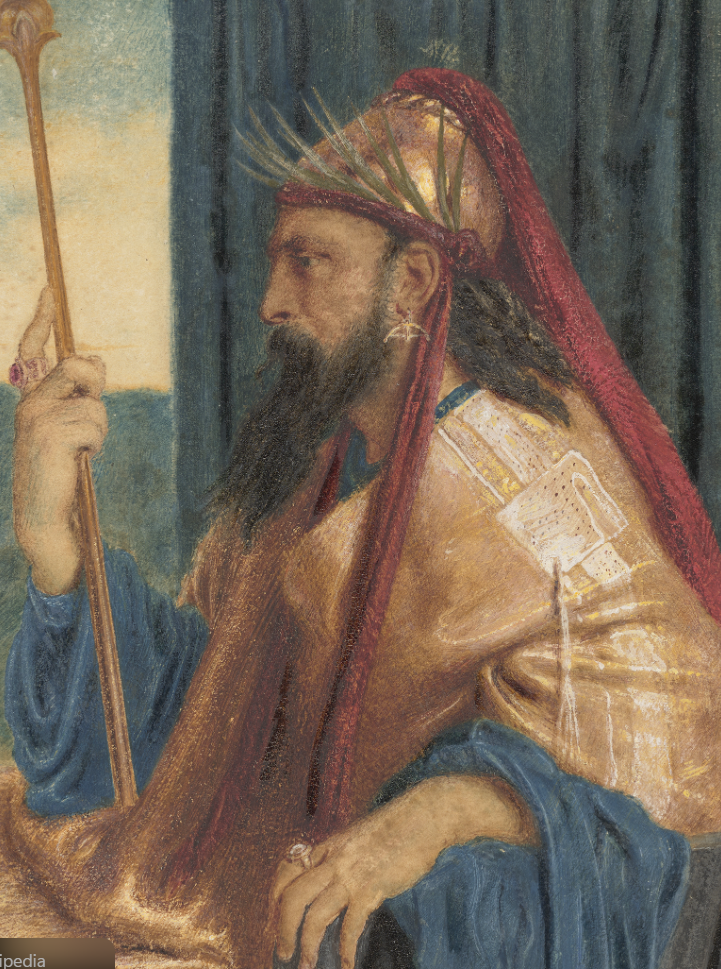
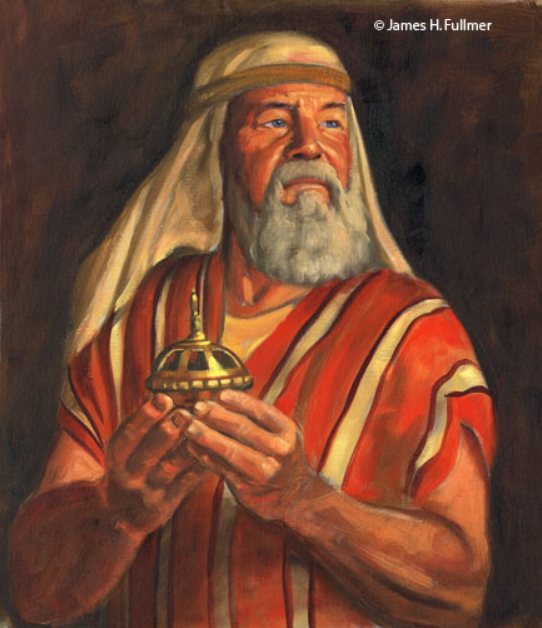

Jesus Christ's Atonement
 Jesus Christ's Atonement
Jesus Christ's Atonement
"In the world ye shall have tribulation: but be of good cheer; I have overcome the world." John 16:33
King Solomon

Solomon
"Trust in the Lord with all thine heart... he shall direct thy paths." Proverbs 3:5–6
Moroni
Moroni
"If men come unto me I will show unto them their weakness..." Ether 12:27
Lehi

Lehi
"Men are, that they might have joy." 2 Nephi 2:25
King Benjamin
Benjamin
"When ye are in the service of your fellow beings..." Mosiah 2:17
Alma
Alma
"By small and simple things are great things brought to pass." Alma 37:6